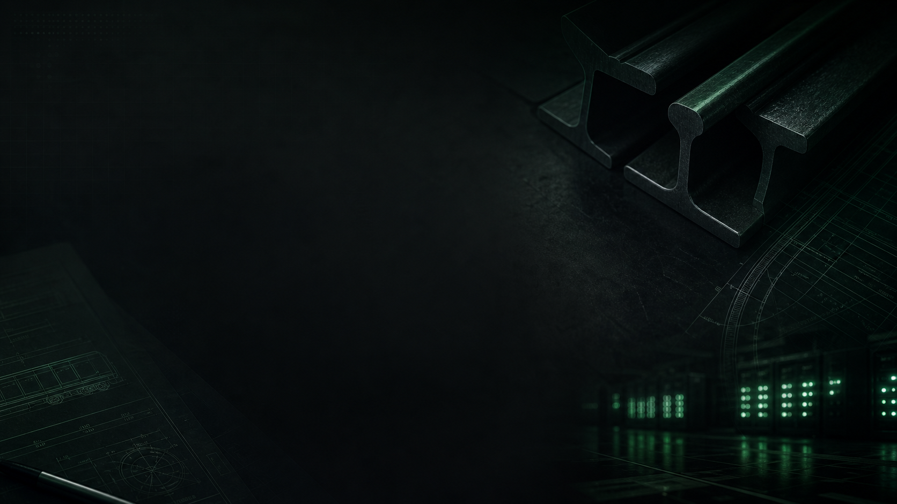

Experiencia y conocimiento
Comprendemos las exigencias técnicas y operativas que hacen único a cada proyecto ferroviario.
SOBRE NOSOTROS
En SOFEIN combinamos conocimiento técnico y visión digital para acompañar cada proyecto con soluciones fiables, eficientes y adaptadas.
SOFEIN nace de una trayectoria dedicada al material y a los proyectos ferroviarios. Desde esa experiencia, SOFEIN Digital acerca a cada entidad una nueva forma de mantenerse conectada con la gestión de su proyecto.
NUESTRA FORMA DE TRABAJAR
Comprendemos las exigencias técnicas y operativas que hacen único a cada proyecto ferroviario.
Trabajamos con rigor en cada fase para aportar soluciones seguras, sólidas y alineadas con el sector.
Escuchamos, comprendemos y acompañamos a cada cliente desde la cercanía y la implicación directa.
Miramos al futuro del ferrocarril con soluciones responsables que generan valor a largo plazo.
CONFIANZA QUE PERDURA
Detrás de cada proyecto hay personas que necesitan respuestas claras. Por eso apostamos por relaciones duraderas, soluciones personalizadas y una comunicación transparente.
Conocer SOFEIN Digital →
Seguimos construyendo confianza día a día, con la vista puesta en el ferrocarril que viene.
Conocer Consulting by SOFEIN →